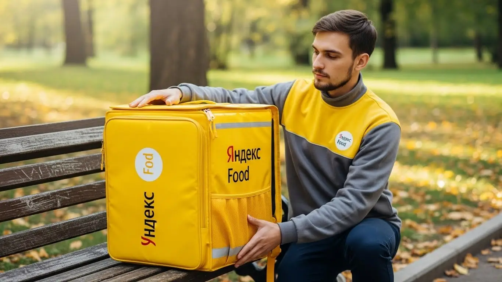
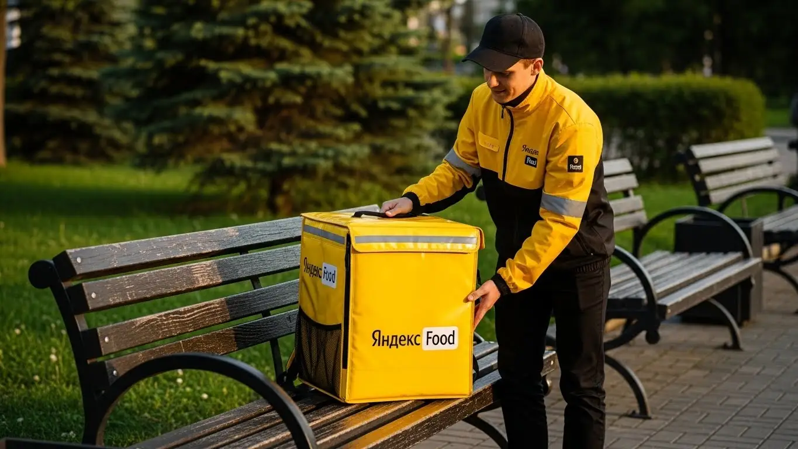
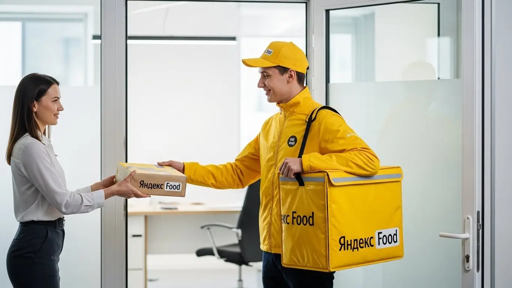

Работа курьером Яндекс Еды в Красноярске: доход в 2025-2026 год
- Работа курьером Яндекс Еды в Красноярске: для кого эта вакансия и что вы получите
- Сколько вы будете зарабатывать курьером в Красноярске: калькулятор дохода и разбор выплат
- Реальный заработок курьера в Красноярске: смены и месячный доход
- График работы и форматы занятости
- Требования к кандидату и документы
- Самозанятость, налоги и юридическая чистота
- Пошаговое оформление и первый выход на линию в Красноярске
- Пешком, на вело или на авто: что выгоднее в Красноярске
- Районы, маршруты и «топовые» зоны заказов в Красноярске
- Безопасность, страховка, штрафы и оплата простоя
- Плюсы и возможные минусы работы курьером в Красноярске
- Реальные истории и отзывы курьеров из Красноярска
- Ответы на главные вопросы о работе курьером Яндекс Еды в Красноярске
- Короткие ответы на главные вопросы
- Подведём итоги: что делать дальше?
Все города
Думаешь, работа курьером в Красноярске — это просто? Взял сумку, сел на велик или в машину и поехал рубить быстрые деньги, глядя на Енисей? А как насчет пробок на Партизана Железняка в час пик, заказов в гору на Академгородок в гололед или ожидания у ТЦ «Планета», где вечно нет парковки? Большинство рекламных статей поют о свободе и высоком доходе, но молчат о реальных проблемах. Я здесь, чтобы рассказать, как на самом деле устроена работа курьером Яндекс Еда в Красноярске, без розовых очков и рекламной шелухи.
Поверь, 9 из 10 новичков в нашем городе сливаются в первый же месяц. И не потому, что работа плохая, а потому что они не готовы к её «внутрянке». Они видят в приложении цифру заработка, но не считают реальные расходы на бензин, налог самозанятого и ремонт подвески после наших дорог. Они не понимают, как работает приоритет, в каких районах — Покровке или Взлётке — реально есть заказы, а где будешь стоять часами. В итоге — разочарование, убитое время и мизерный доход.
В этом гиде мы всё разберём по косточкам. Я покажу на реальных примерах, сколько чистыми приносит работа курьером Яндекс Еды в Красноярске на машине, велосипеде и пешком. Мы выясним, в каких районах и в какое время включаются самые «жирные» коэффициенты. Посчитаем, как наша сибирская зима и летняя жара влияют на количество заказов. И главное — я расскажу, за что на самом деле штрафуют и как этих штрафов избежать, чтобы не работать в минус. Если же вы хотите сразу перейти к делу, то актуальные условия и форма заявки всегда доступны на странице про работу курьером Яндекс Еда в Красноярске.
Меня зовут Алексей. Я сам откатал не одну тысячу километров с желтой сумкой по Красноярску, а сейчас у меня свой небольшой таксопарк-партнер. Так что я знаю всю эту кухню изнутри — и со стороны курьера, и со стороны системы. Хватит предисловий. Давай по порядку, сейчас всё разложу по полочкам, чтобы ты сразу начал зарабатывать, а не набивать шишки, как остальные.
Прежде чем нырять в детали, давай пробежимся по главным темам статьи в формате короткого гида.
Что ты точно узнаешь из этого разбора
В этой статье ты ТОЧНО узнаешь:
- Сколько чистыми можно заработать за смену в Красноярске на авто, велосипеде и пешком.
- В каких районах — на Взлётке, в центре или на Пашенном — реально больше заказов и выше коэффициенты.
- Как сибирская погода, время суток и пробки влияют на доход и как это использовать в свою пользу.
- За что на самом деле могут снизить рейтинг или применить штраф, и как этого избежать.
- Что выгоднее для Красноярска: ходить пешком, крутить педали или жечь бензин в своей машине.
А если тебе некогда читать всю статью — переходи сразу к заключению, где ты найдёшь короткие ответы на все эти вопросы и указания, в каких разделах искать подробности.
А чтобы сразу оценить ключевые цифры, вот наглядная инфографика.
Работа курьером в Красноярске: ключевые цифры
Доход в час
350–500 ₽
В часы высокого спроса и с учетом бонусов
Заработок за смену
2800–3600 ₽
Средний доход за активный 8-часовой слот
График работы
Свободный
Выбираете удобные слоты от 2 до 12 часов в день
Чаевые от клиентов
10–15%
Заказов с чаевыми, которые полностью ваши
Работа курьером Яндекс Еды в Красноярске: для кого эта вакансия и что вы получите
Давай начистоту: работа курьером в Яндекс Еде — это не для всех, но для многих в Красноярске это реальный выход. Если ты ищешь понятный и быстрый способ заработать, без начальников над душой и сложного трудоустройства, то ты по адресу. Здесь не важен твой диплом или предыдущий опыт работы, главное — желание двигаться и зарабатывать.
Эта работа — конструктор. Ты сам решаешь, будет это лёгкая подработка на пару часов в день или полноценная занятость с хорошим доходом. Всё зависит от твоих целей и времени, которое ты готов вложить.

Кому подойдёт эта работа в Красноярске
Я вижу на линии самых разных людей, и для каждого эта работа решает свои задачи. Посмотри, может, узнаешь себя:
- Студенты. Идеальный вариант для подработки, чтобы совмещать с учёбой в СФУ или любом другом вузе, работая как пеший курьер или на велосипеде. Можно выходить на пару часов после пар или работать по выходным. Деньги на карту приходят быстро — не нужно ждать стипендии или просить у родителей.
- Люди без опыта. Если ты никогда нигде не работал или хочешь сменить сферу, это самый простой старт. Тебя всему научат на коротком онлайн-инструктаже, а дальше всё интуитивно понятно в приложении. Без многоэтапных собеседований.
- Те, кому нужна подработка. Работаешь в офисе с 9 до 6, а денег всё равно не хватает? Можешь доставлять заказы по вечерам или в свои выходные. Это отличный способ закрыть кредит, накопить на что-то или просто иметь финансовую подушку.
- Водители-курьеры на автомобиле. Если у тебя есть своя машина, ты можешь зарабатывать больше, выполняя заказы по всему городу, особенно на дальние расстояния. В нашем сибирском климате водители-курьеры зимой вообще нарасхват.
- Любители свободы. Если тебе важен свободный график, и ты не хочешь сидеть в четырёх стенах, это твой вариант. Ты сам себе начальник, планируешь свой день и видишь результат своей работы сразу в виде денег на счёте.
Главные преимущества для жителей районов Взлётка, Ветлужанка и Пашенный
Одно из главных удобств — тебе не нужно каждое утро тащиться через весь Красноярск на работу. Ты можешь работать прямо в своём районе. Живёшь на Взлётке? Отлично, там полно бизнес-центров и ресторанов, заказы есть всегда. Обитаешь в Ветлужанке или на Пашенном? Тоже не проблема: в спальных районах люди активно заказывают еду и товары из магазинов.
Ты просто выходишь из дома, включаешь приложение «Яндекс Про» и начинаешь принимать заказы. Не нужно тратить время и деньги на дорогу до «офиса» — твой район и есть твой офис. Это особенно ценно в Красноярске, когда не хочешь стоять в пробках на Октябрьском мосту или улице Партизана Железняка.
Краткое обещание по доходу и условиям
Теперь о главном — о деньгах. В Красноярске активный курьер на полной занятости может зарабатывать до 85 000 – 90 000 рублей в месяц. Если рассматривать эту вакансию как подработку на несколько часов в день, можно рассчитывать на 25 000 – 40 000 рублей. За одну смену в 8-10 часов вполне реально сделать 3000–4500 рублей.
Ключевые условия работы просты: свободный график, который ты сам составляешь в приложении, и ежедневные выплаты на твою банковскую карту. Опыт не требуется, чтобы начать. Всё, что нужно — смартфон, желание работать и быть вежливым с клиентами. Это честная сделка: сколько поработал — столько и получил, без задержек и сложных схем.
Вот живой пример: ко мне в парк пришёл парень, студент-заочник из Аэрокосмического университета. Живёт в Советском районе. Он поставил себе цель — накопить на подержанную машину. Начал работать по 6-8 часов 5 дней в неделю, в основном катался по своему району и соседнему Северному. За три месяца активной работы, не отказываясь от заказов в плохую погоду, он заработал и купил себе свою первую «ласточку». Это к тому, что если есть цель, то работа курьером даёт реальный инструмент для её достижения.
Вывод: Работа курьером в Яндекс Еде подходит практически любому, кто ищет гибкий заработок в Красноярске. Главные плюсы — возможность работать рядом с домом, быстрые ежедневные выплаты и старт без опыта. Мой совет: не бойся начинать, система в приложении построена так, чтобы ты быстро во всём разобрался.
Сколько вы будете зарабатывать курьером в Красноярске: калькулятор дохода и разбор выплат
Многих новичков пугает, что здесь нет фиксированного оклада. Но в этом и главный плюс — твой доход зависит напрямую от тебя. Давай разберём, из чего складывается зарплата курьера и как её прогнозировать.
Система оплаты в Яндекс Еде прозрачна: в приложении «Яндекс Про» ты всегда видишь, сколько стоит каждый заказ, ещё до его принятия. Все доходы, бонусы и чаевые отображаются в статистике, так что никаких сюрпризов в конце месяца.
Из чего складывается доход курьера
Твой итоговый заработок за смену — это сумма нескольких составляющих. Важно понимать каждую из них, чтобы работать эффективнее.
- Оплата за заказ. Это базовая стоимость за то, что ты забираешь заказ из точки А (ресторан, магазин) и доставляешь в точку Б (клиенту).
- Доплата за расстояние. Чем дальше ехать или идти до клиента, тем больше доплата. Система рассчитывает оптимальный маршрут и платит за каждый его километр.
- Повышающие коэффициенты. Это самое интересное. В часы пик (обед, ужин), в плохую погоду (дождь, снегопад, сильный мороз) или в районах с высоким спросом на карте в приложении появляются зоны, окрашенные в разные цвета. Заказы из этих зон стоят дороже — в 1.5, 2, а то и в 3 раза.
- Бонусы. Сервис часто предлагает персональные цели. Например, выполни 20 заказов за день и получи бонус 1000 рублей. Это отличный стимул работать активнее.
- Чаевые. Клиенты могут отблагодарить тебя за хорошую работу через приложение. Все чаевые — 100% твои, сервис не берёт с них комиссию.
- Оплата простоя. Важная гарантия. Если ты вышел на запланированный слот (смену), а заказов временно нет, сервис начисляет минимальную оплату за время ожидания. Ты не останешься с нулём, даже если спрос на время упадёт.
- Компенсация проезда. Для пеших курьеров на некоторых длинных заказах может быть предусмотрена компенсация проезда на общественном транспорте.
Как пользоваться калькулятором дохода
Чтобы прикинуть свой будущий заработок, не нужно гадать на кофейной гуще. На официальном сайте для курьеров есть специальный калькулятор. Пользоваться им просто:
- Выбираешь свой город — Красноярск.
- Указываешь тип доставки: пеший курьер, на велосипеде или на своём авто.
- Двигаешь ползунки: сколько часов в день и сколько дней в неделю планируешь работать.
На выходе калькулятор покажет примерный диапазон твоего дохода за день и за месяц.
Калькулятор дохода курьера в Красноярске
8 часов
5 дней
Примерный доход в месяц:
64 000 ₽
* Расчёт основан на средней ставке ~400 ₽/час для Красноярска. Реальный доход зависит от типа доставки, спроса, бонусов и вашего рейтинга.
Конечно, это прогноз на основе средних данных по городу. Твой реальный заработок может быть и выше, если ловить пиковые часы и бонусы. Но как ориентир для старта — это отличный инструмент.
Примеры расчёта для пешего, вело- и авто‑курьера в Красноярске
Давай на конкретных примерах, чтобы было понятнее, сколько можно заработать в Красноярске.
- Пеший курьер в центре. Представь, ты работаешь в Центральном районе, в районе проспекта Мира и улицы Карла Маркса. Здесь куча кафе и офисов. Выходишь на 4-5 часов в обеденное и вечернее время. Заказы короткие, но их много. С учётом повышенного спроса можно заработать 1500–2200 рублей за такую смену.
- Велокурьер между спальными районами. Ты на велосипеде и работаешь на стыке Советского и Октябрьского районов, например, возишь заказы между Взлёткой и Ветлужанкой. Ты быстрее пешего, объезжаешь пробки. За полноценную 8-часовую смену твой доход может составить 2800–3700 рублей.
- Водитель-курьер на автомобиле по всему городу. На своей машине ты можешь брать самые выгодные заказы: доставка из гипермаркетов, поездки на другой берег Енисея или в отдалённые районы вроде Солнечного. Особенно выгодно работать в морозы или снегопады, когда коэффициенты максимальные. За 8–10 часов работы можно заработать 4000–6000 рублей и больше. Из этой суммы нужно вычесть расходы на бензин, но всё равно выходит очень прилично.
Вот ещё один пример из жизни: у меня есть знакомый водитель-курьер, который работает исключительно в «плохую» погоду. Как только видит в прогнозе сильный снегопад или мороз под -30, он знает — это его день. Включает приложение, едет в зону с самым высоким коэффициентом (часто это крупные ТРЦ вроде «Планеты») и за 8-9 часов делает недельную норму офисного работника. Он говорит, что в такие дни люди особенно щедры на чаевые, потому что ценят доставку в экстремальных условиях.
Вывод: Твой заработок курьером в Красноярске — это не случайность, а результат твоих действий. Понимая, из чего он складывается, ты можешь им управлять. Мой совет: изучай карту спроса в Яндекс Про, не бойся работать в пиковые часы и плохую погоду — именно тогда зарабатываются самые большие деньги.
Реальный заработок курьера в Красноярске: смены и месячный доход
Теперь к главному вопросу, который волнует всех, — деньги. Сколько реально можно заработать в Красноярске, работая курьером в Яндексе? Реклама обещает золотые горы, но я расскажу, как обстоят дела на самом деле, без прикрас. Итоговые цифры зависят от трёх вещей: на чём ты двигаешься, сколько часов готов работать и насколько хорошо соображаешь.
Заработок — это не лотерея, а система. Поймёшь, как она работает, — будешь в плюсе. Не поймёшь — будешь жаловаться на «мало заказов». Всё зависит от района, времени и погоды. В Красноярске эти факторы играют огромную роль. Зимой в -30°С и летом в +30°С спрос на доставку взлетает, а вместе с ним и твой доход.

Вот показательный случай: у меня был знакомый автокурьер, который в первый месяц заработал тысяч 40 и был недоволен. Он катался хаотично по всему городу, просто сжигал бензин. Я ему посоветовал сконцентрироваться на двух районах — Взлётке и Северном, выходить строго в пиковые часы (обед и вечер) и не брезговать короткими заказами из ТРЦ «Планета» в выходные. На следующий месяц его заработок перевалил за 80 тысяч при том же количестве часов. Он просто начал работать головой, а не только крутить руль.
В общем, твой доход напрямую зависит от твоего подхода. Можно просто кататься и ждать заказов, а можно анализировать спрос и быть в нужном месте в нужное время.
Диапазон дохода для подработки и полной занятости
Если ты ищешь подработку на пару часов в день после учёбы или основной работы, цифры будут одни. Если готов впахивать полный день — совсем другие. Вот реальные вилки для Красноярска, на которые можно ориентироваться.
Подработка (2–4 часа в день):
- Пеший курьер: В среднем 800–1500 рублей за смену. Идеально для центра города, где всё компактно, или вокруг крупных жилых комплексов.
- Велокурьер: 1000–1800 рублей. На велосипеде ты мобильнее, успеваешь больше, особенно в районах вроде Взлётки или Зелёной Рощи, где можно срезать через дворы.
- Курьер на авто: 1500–2500 рублей. На машине ты берёшь самые дорогие, дальние заказы, особенно в вечерний пик, когда люди заказывают ужины из ресторанов. За месяц на подработке можно спокойно делать 20 000–45 000 рублей.
Полная занятость (8–10 часов в день):
- Пеший курьер: 2500–3500 рублей в день. Физически тяжело, но в центре, где постоянный поток заказов, вполне реально.
- Велокурьер: 3000–4500 рублей. Это уже серьёзный заработок. За полный день на велосипеде можно накатать приличную сумму, особенно в тёплое время года.
- Водитель-курьер: 4000–6000+ рублей. Это самый прибыльный вариант. Ты можешь работать по всему городу, брать заказы в пригород, работать в любую погоду. В месяц зарплата самых активных водителей-курьеров в Красноярске доходит и до 100 000–120 000 рублей «грязными» (до вычета расходов на бензин и налоги).
Как район, время суток и погода влияют на доход
Запомни три кита высокого заработка: место, время и погода. В Красноярске это работает безотказно. Если ты научишься ловить волну спроса, будешь зарабатывать ощутимо больше других при тех же затратах времени.
Главный инструмент — карта спроса в приложении «Яндекс Про». Где зоны окрашены в фиолетовый цвет — там действуют повышающие коэффициенты, то есть за каждый заказ платят больше. Твоя задача — быть в этих зонах. Они появляются в обеденный пик (с 12:00 до 14:00) в районе бизнес-центров на Взлётке и в центре, и в вечерний (с 18:00 до 21:00) — в спальных районах вроде Северного, Покровки и на Правом берегу. Выходные — это один большой пик, особенно в плохую погоду.
Красноярская погода — твой лучший друг. Как только пошёл сильный дождь, снегопад или ударил мороз под -25°С, большинство курьеров прячутся по домам. А люди, наоборот, начинают заказывать еду и продукты в три раза активнее. В этот момент коэффициенты взлетают до небес. Да, работать некомфортно, но одна такая смена может принести доход как две обычные, плюс часто начисляются дополнительные бонусы. К тому же, в плохую погоду клиенты чаще оставляют хорошие чаевые — ценят твой труд.
Советы по увеличению заработка от опытных курьеров
Просто выйти на линию недостаточно. Чтобы зарабатывать хорошо и стабильно, а не от случая к случаю, нужно подходить к делу с умом. Вот несколько проверенных советов от меня и моих ребят.
- Планируй слоты заранее. Не жди, когда появятся свободные. Заходи в «Яндекс Про» и бронируй самые «жирные» слоты на несколько дней вперёд: вечер пятницы, субботу и воскресенье. Так ты гарантированно попадёшь на пик спроса.
- Изучи свой район. Не стоит метаться по всему Красноярску в погоне за фиолетовыми зонами. Выбери 1-2 района, например, Советский и Центральный, и изучи их досконально. Знай, где находятся самые популярные рестораны, фуд-корты в ТРЦ «Планета» или «Июнь», и старайся находиться поближе к ним в часы пик. Это сократит время на дорогу до точки А и увеличит твой часовой заработок.
- Не отказывайся от мультизаказов. Когда приложение предлагает тебе взять сразу два заказа из одного ресторана по разным адресам поблизости — бери. Да, придётся немного подождать, пока приготовят оба, но по деньгам это почти всегда выгоднее, чем выполнять их по одному.
- Комбинируй. Если ты на машине, используй её преимущества. Бери дальние заказы, а приехав в плотно застроенный район, можешь припарковаться и выполнить пару коротких пеших заказов в радиусе километра. Это экономит бензин и время на поиск парковки у каждого подъезда.
График работы и форматы занятости
Главный козырь работы курьером — это свободный график. И это не просто красивые слова. Ты действительно сам решаешь, когда и сколько работать. Хочешь — выходишь на два часа вечером, хочешь — работаешь шесть дней в неделю по десять часов. Никто не стоит над душой с планом и не отчитывает за опоздания, если ты работаешь на свободных слотах.
Эта гибкость позволяет совмещать доставку с чем угодно: учёбой, основной работой, семьёй. Но важно понимать: чтобы эта свобода превращалась в деньги, нужна самодисциплина. Хаотичные выходы на час-другой в разное время суток принесут копейки. Стабильный доход появляется тогда, когда ты начинаешь планировать свои выходы, ориентируясь на пики спроса.
Один из моих водителей работает по графику 2/2 на основном месте. В свои выходные он не сидит дома, а выходит на линию как автокурьер. За два полных дня в субботу и воскресенье он спокойно делает 10-12 тысяч рублей. Эти деньги полностью покрывают расходы на машину и ещё остаётся приличная сумма сверху. Он говорит, что для него это идеальный формат: и дополнительный доход, и смена деятельности.
В итоге, график — это твой инструмент. Насколько эффективно ты им воспользуешься, столько и заработаешь. Сервис даёт возможности, а ты решаешь, как их реализовать.
Подработка после учёбы или основной работы
Совмещать доставку с другой деятельностью — самый популярный сценарий. Это отличный способ получить быстрые деньги без долгосрочных обязательств. Вот несколько реальных примеров, как это работает в Красноярске.
- Студент из СФУ. Он живёт в общежитии в Октябрьском районе и каждый будний день после пар выходит на 3-4 часа на велосипеде. Его зона — кампус университета и прилегающие улицы. Заказов море: студенты постоянно заказывают пиццу, роллы, бургеры. В месяц у него выходит 25-30 тысяч рублей. Хватает и на жизнь, и на развлечения.
- Офисный менеджер. Работает в центре с 9 до 18. После смены он садится в свою машину и берёт вечерний слот на 3 часа. Катается по Центральному и Железнодорожному районам, развозит ужины из ресторанов. Особенно любит пятничные вечера, когда коэффициенты максимальные. Такая подработка приносит ему дополнительные 30-40 тысяч в месяц, которые он откладывает на отпуск.
- Молодой отец. У него основная работа на заводе со сменным графиком. Когда у него выходной, он берёт дневной слот на 6-8 часов. Работает в своём Советском районе, чтобы быть недалеко от дома. Говорит, что это помогает закрывать ипотеку значительно быстрее.
Как видишь, сценариев масса. Главное — найти свой ритм и зону, где тебе удобно работать.
Полная занятость: как выглядит типичный день курьера
Если ты рассматриваешь доставку как основную работу, твой день будет строиться вокруг ритма города. Это не просто «включил приложение и поехал», а чёткая стратегия, чтобы выжать из смены максимум.
Типичный день курьера на полной занятости в Красноярске выглядит примерно так. Он выходит на линию около 10-11 утра, когда город просыпается и начинаются первые заказы из «Яндекс Еды», магазинов и «Яндекс Лавки». К 12:00 он уже перемещается в центр или на Взлётку, чтобы поймать обеденный пик — это 2-3 часа непрерывной работы. После 15:00 наступает небольшое затишье. В это время можно спокойно пообедать, заправиться или взять один-два дальних, но дорогих заказа.
Основной заработок начинается вечером. С 18:00 до 22:00 — самый горячий период. Спрос максимальный по всему городу, особенно в густонаселённых спальных районах. В это время заказы идут один за другим, без пауз. Опытный курьер заканчивает смену около 22:00-23:00, выполнив за день 25-40 заказов, в зависимости от транспорта и расстояний. Такой подход позволяет зарабатывать стабильно и много.
Как планировать слоты и выходы через приложение «Яндекс Про»
Приложение «Яндекс Про» — твой главный рабочий инструмент. Именно через него ты управляешь своим графиком. Есть два основных формата: плановые слоты и свободные выходы. Плановый слот ты бронируешь заранее на определённое время и в конкретной зоне. Свободный выход — просто нажимаешь кнопку «На линию», когда тебе удобно.
Новичкам я советую начинать с плановых слотов. Это дисциплинирует и часто даёт бонусы, например, гарантированный минимальный доход за смену, даже если заказов было мало. Чтобы запланировать слот, нужно зайти в раздел «Расписание». Там ты увидишь карту Красноярска с доступными временными интервалами в разных районах. Выбирай те, что совпадают с часами пик — с 12 до 14 и с 18 до 21.
Критически важно не опаздывать на забронированный слот. Приезжай в выбранную зону за 5-10 минут до начала. Если ты опоздаешь, система может снизить твой рейтинг или приоритет в распределении заказов. А высокий рейтинг — это ключ к стабильному потоку хороших заказов. Система больше доверяет ответственным курьерам, поэтому пунктуальность напрямую влияет на твой заработок.
Требования к кандидату и документы
Многие думают, что для работы курьером в Яндексе нужны особые навыки или кипа бумаг. На деле всё гораздо проще, и начать можно без опыта. Требования у сервиса минимальные — это сделано специально, чтобы на линию мог выйти практически любой, кто готов работать. Главное — быть ответственным и иметь желание зарабатывать.
Возраст, гражданство и базовые условия
Начнём с главных условий — возрастных ограничений. Чтобы стать курьером Яндекс Еды или Доставки, тебе должно быть полных 18 лет. Никаких исключений здесь нет, так как работа связана с материальной ответственностью и заключением официального договора, а это по закону возможно только с совершеннолетия.
Второе важное условие — гражданство. Сервис сотрудничает с гражданами Российской Федерации, а также стран Евразийского экономического союза (ЕАЭС). К ним относятся Беларусь, Казахстан, Армения и Киргизия. Если у тебя паспорт одной из этих стран, проблем с оформлением не будет.
Что касается физической формы, то от тебя не требуют олимпийских рекордов. Если ты пеший курьер, будь готов проходить за смену 10–15 километров. Для велокурьера важна выносливость, особенно в Красноярске, где хватает подъёмов, например, при доставке в районе Академгородка. Водителю-курьеру на авто главное — уверенно чувствовать себя за рулём и хорошо ориентироваться в городе, чтобы не стоять в пробках на улицах Ленина или Карла Маркса в час пик.
Какие документы нужны для работы курьером
Список документов для старта короткий, и собрать его можно за один день. Тебе понадобятся:
- Паспорт. Основной документ для подтверждения личности и возраста.
- ИНН (Идентификационный номер налогоплательщика). Он нужен для регистрации в качестве самозанятого и уплаты налогов. Если не помнишь свой номер, его легко найти за пару минут на сайте ФНС или Госуслуг.
- Именная банковская карта. Деньги за выполненные заказы будут приходить именно на неё. Важно, чтобы карта была выпущена российским банком и принадлежала именно тебе.
- Медицинская книжка. Она обязательна, если ты планируешь доставлять заказы из ресторанов и кафе, то есть работать в Яндекс Еде. Это требование закона о безопасности пищевых продуктов. Сделать её можно в любом лицензированном медцентре Красноярска. Для доставки посылок (Яндекс Доставка) медкнижка обычно не требуется.
Подготовь эти документы заранее, чтобы оформление прошло максимально быстро. Как правило, от заполнения анкеты до первого заказа проходит всего один-два дня.
Можно ли работать с 16 лет и какие есть альтернативы
Часто спрашивают, можно ли устроиться в Яндекс Еду или Доставку с 16 или 17 лет. Отвечаю честно: нет. Как я уже говорил, минимальный возраст для регистрации в сервисе — 18 лет. Это связано с полной дееспособностью, возможностью оформить статус самозанятого и нести ответственность за доставляемые товары, которые могут быть довольно дорогими.
Какие есть варианты подработки для подростков в Красноярске? Официальных и хорошо оплачиваемых, к сожалению, не так много. Можно рассмотреть вакансии промоутера — раздавать листовки у крупных ТЦ, например, у «Планеты» или «Июня». Иногда кафе ищут помощников на кухню или в зал на неполный день. Но нужно понимать, что такая работа часто неофициальная, а заработок там будет ниже, чем в доставке. Поэтому лучший вариант — дождаться 18-летия и прийти в сервис уже на понятные и прозрачные условия.
Вот, например, история одного парня: ко мне как-то обратился студент СФУ, приехал в Красноярск из другого региона. Он был уверен, что без местной прописки его не возьмут. Мы с ним открыли анкету, и выяснилось, что важен только паспорт РФ и гражданство, а город прописки не имеет значения. Он подготовил документы, и уже через день вышел на свою первую смену в районе Октябрьского моста, где жил в общежитии. Заработал за 4 часа около 1500 рублей и был очень доволен.
Краткий вывод: Основные требования — это совершеннолетие и гражданство РФ или ЕАЭС. Пакет документов минимален, а условия работы курьером понятны и не вызовут сложностей. Главный совет: перед заполнением анкеты убедись, что у тебя под рукой есть паспорт, ИНН и реквизиты твоей личной банковской карты — это сэкономит время и нервы.
Самозанятость, налоги и юридическая чистота
Многих новичков пугают слова «самозанятость» и «налоги». Кажется, что это сложно, нужно вести бухгалтерию и разбираться в законах. На самом деле, статус самозанятого (или налог на профессиональный доход, НПД) создан как раз для того, чтобы максимально упростить жизнь таким людям, как мы — курьерам и водителям. Это самый простой и легальный способ работать на себя.
Почему курьеры Яндекс Еды работают как самозанятые
Формат самозанятости — это не трудовой договор, а партнёрство. Ты не сотрудник Яндекса в классическом понимании, а независимый исполнитель, который оказывает услуги по доставке для сервисов Яндекс Еда и Яндекс Доставка. В этом и есть главный плюс — свобода. Ты сам решаешь, когда и сколько работать, у тебя нет начальника и жёсткого графика.
Вот ключевые преимущества этого статуса:
- Официальный доход. Все твои заработки проходят «в белую». Это значит, что ты можешь без проблем взять кредит, ипотеку или получить визу, предоставив справку о доходах из приложения «Мой налог».
- Никакой сложной отчётности. Тебе не нужен бухгалтер. Все чеки формируются автоматически, а налог рассчитывается сам.
- Легальность и безопасность. Ты работаешь в рамках закона, платишь налоги и спишь спокойно. Никаких рисков, связанных с «серой» зарплатой или работой за наличку.
По сути, самозанятость — это юридическое оформление твоей независимости. Ты сам себе хозяин, а сервис предоставляет тебе поток заказов и удобную платформу для работы.
Как за 10 минут оформить самозанятость через «Мой налог»
Регистрация статуса самозанятого занимает меньше времени, чем перерыв на кофе. Всё делается онлайн через официальное приложение от Федеральной налоговой службы.
Вот простая пошаговая схема:
- Скачай приложение «Мой налог» в Google Play или App Store. Оно бесплатное и официальное.
- Открой приложение и выбери способ регистрации. Самый быстрый — «По паспорту РФ».
- Отсканируй главный разворот паспорта камерой телефона. Приложение само распознает все данные.
- Сделай селфи прямо в приложении. Система сравнит фото с фотографией в паспорте, чтобы убедиться, что это ты.
- Подтверди номер телефона и выбери регион ведения деятельности — Красноярский край.
- Готово! Ты официально стал самозанятым. Уведомление от налоговой придёт в течение нескольких минут.
Весь процесс интуитивно понятен и не требует никаких специальных знаний. Кроме того, при регистрации в приложении Яндекс Про тебе также предложат помощь в оформлении этого статуса, так что ты точно не запутаешься.
Сколько и как платить налоги
Теперь о самом важном — о деньгах. Ставка налога для самозанятого курьера, работающего с Яндексом, составляет 6%. Этот налог платится только с дохода, который ты получаешь от юридического лица, то есть от сервиса. Если ты подрабатываешь и оказываешь услуги физлицам (например, чинишь компьютеры соседям), то с этих денег налог будет 4%.
Процесс уплаты налога полностью автоматизирован и прозрачен. Яндекс сам передаёт в налоговую службу информацию о твоих выплатах. Тебе нужно лишь раз в месяц зайти в приложение «Мой налог»:
- До 12-го числа месяца, следующего за отчётным, там появится сумма начисленного налога.
- Оплатить его нужно до 28-го числа этого же месяца.
Сделать это можно прямо в приложении, привязав банковскую карту, или по квитанции. Это гораздо проще и безопаснее, чем работать неофициально. Работая «в серую», ты не только рискуешь нарваться на штрафы от налоговой, но и лишаешь себя возможности подтвердить свой доход и строить финансовое будущее.
Когда я только начинал свой таксопарк, многие водители боялись переходить на самозанятость. «Зачем государству платить?», «Это сложно!». Но вот реальный пример, который всех убедил: один из моих лучших водителей через полгода смог взять ипотеку в Красноярске, потому что у него был официальный, подтверждённый доход. Те, кто продолжал работать за «серый» нал, о таком могли только мечтать. Этот пример показал, что платить честные 6% — это не потеря, а инвестиция в свою стабильность.
Краткий вывод: Самозанятость — это современный и удобный формат для легальной работы курьером. Налог низкий, регистрация мгновенная, а все процессы автоматизированы. Мой совет: не ищи обходных путей. Официальная работа через оформление самозанятости даёт гораздо больше преимуществ и уверенности в завтрашнем дне, чем любая «серая» схема.
Пошаговое оформление и первый выход на линию в Красноярске
Многие думают, что чтобы стать курьером в Яндексе, нужно пройти долгий путь с бумажками и собеседованиями. На деле всё гораздо проще. Процесс отлажен так, чтобы ты мог начать подработку буквально за один день. Главное — следовать простым шагам, которые система сама подскажет. Никаких начальников и душных офисов, всё оформление проходит онлайн.
Вот как это бывает: был у меня парень, студент СФУ, который решил подработать без опыта. Утром в понедельник заполнил анкету, пока ехал в универ. Днём между парами прошёл обучение на телефоне, а вечером после занятий заехал в офис партнёра сервиса на Взлётке за термосумкой. В тот же вечер он уже выполнял свои первые заказы в Советском районе. К ночи на его балансе было около 1800 рублей. Вот так, без лишней бюрократии, человек за день решил свою финансовую задачу.

В итоге, процесс регистрации и старта максимально упрощён. Не нужно бояться сложностей — их нет, а основные требования минимальны. Подготовь заранее паспорт и ИНН, чтобы оформление прошло ещё быстрее. Мой совет: как только получишь доступ, не бери сразу длинный слот на 8 часов в незнакомом районе. Начни с 2–3 часов рядом с домом, чтобы освоиться в приложении и понять условия работы.
Шаг 1–2: анкета и онлайн‑обучение
Первый этап, чтобы стать курьером, — это заполнение простой анкеты на сайте. Ничего сложного: ФИО, дата рождения, номер телефона. Это занимает 10–15 минут. После этого твои данные уходят на быструю проверку, которая обычно проходит автоматически и занимает от нескольких минут до пары часов. Никто не будет звонить бывшим работодателям или требовать рекомендации.
Как только проверка пройдена, тебе откроется доступ к короткому онлайн-обучению. Это не нудные лекции, а несколько видеороликов и тесты. Тебе покажут, как пользоваться приложением «Яндекс Про», принимать и выполнять заказы из ресторанов Яндекс Еды и магазинов, как общаться с клиентами и поддержкой. Также там есть важный блок по правилам безопасности на дороге — отнесись к этому серьёзно, это для твоей же эффективности.
Шаг 3: получение сумки и доступа к заказам в Красноярске
После успешного прохождения тестов остаётся последний шаг — получить фирменную экипировку. Главный элемент — это термосумка или термокороб. Без него система не даст доступ к заказам из ресторанов и магазинов, а это основной источник дохода для курьера. В Красноярске получить термокороб можно в офисе одного из партнёров сервиса или через курьерскую доставку.
Все доступные адреса ты увидишь в приложении «Яндекс Про» после обучения. Система сама покажет ближайшие точки. Как только получишь сумку и отметишь это в приложении, твой профиль будет полностью активирован. С этого момента ты можешь видеть и принимать заказы.
Шаг 4: первый слот и первый доход
Теперь самое интересное — первый выход на линию и первые деньги. В приложении «Яндекс Про» ты увидишь карту Красноярска с зонами повышенного спроса и доступными слотами. Это и есть твой свободный график: можно выбрать любой удобный интервал, от пары часов до целого дня. Для начала я рекомендую выбрать знакомый район, например, тот, где ты живёшь. Так ты будешь увереннее ориентироваться и не потратишь время на поиски адреса.
Выбрав слот, нажимаешь кнопку «На линию» — и ты в работе. Приложение начнёт предлагать заказы поблизости. Принимаешь заказ, следуешь по маршруту, забираешь посылку и отвозишь клиенту. Деньги за выполненные доставки поступают на баланс в приложении. Сервис предлагает ежедневные выплаты, так что вывести свой первый доход на карту можно будет в тот же или на следующий день.
Пешком, на вело или на авто: что выгоднее в Красноярске
Выбор транспорта — ключевой момент, который напрямую влияет на твой заработок и усталость. Красноярск — город с разнообразным рельефом, пробками и большими расстояниями, поэтому у каждого формата есть свои плюсы и минусы. Нет универсального ответа, что лучше, — всё зависит от твоих целей, физической формы и района, в котором планируешь работать.
Например, один мой знакомый водитель-курьер зимой работает исключительно на машине, закрывая дальние заказы по всему городу и пригороду. Его зарплата за смену в 8–10 часов в плохую погоду стабильно составляет 5–7 тысяч рублей. А летом он пересаживается на велосипед и работает по 4–5 часов в день в районе Взлётки и Северного. Говорит, что по деньгам в час выходит почти так же, но без расходов на бензин и нервов в пробках.
В конечном счёте, выбор транспорта определяет твою стратегию работы в Красноярске. Для подработки в центре пеший формат идеален. Для быстрых и частых заказов в спальных районах — курьер на велосипеде вне конкуренции. А для максимального и стабильного дохода, особенно при полной занятости, свой автомобиль остаётся лучшим инструментом. Мой совет: если есть возможность, попробуй разные форматы, чтобы понять, что подходит именно тебе.
Сравнение форматов доставки в Красноярске
| Параметр | Пеший курьер | Велокурьер | Водитель-курьер |
|---|---|---|---|
| Средний доход в час | 300–450 ₽ | 400–600 ₽ | 500–850+ ₽ |
| Оптимальные районы | Центральный район, исторический центр, набережная | Взлётка, Северный, Зелёная Роща, правый берег (Кировский, Ленинский) | Весь город, межрайонные маршруты, пригороды (Солонцы, Емельяново) |
| Основные расходы | Удобная обувь, проезд на автобусе (иногда) | Обслуживание велосипеда | Бензин, амортизация, страховка |
| Главные плюсы | Минимум затрат, независимость от пробок, полезно для здоровья | Высокая скорость на коротких дистанциях, "оплачиваемый фитнес" | Комфорт в любую погоду, возможность брать крупные и дальние заказы, максимальный доход |
| Главные минусы | Физическая усталость, зависимость от погоды, небольшой радиус доставки | Сезонность, зависимость от погоды, риск прокола колеса | Пробки, расходы на топливо и обслуживание авто, сложности с парковкой в центре |
Пеший курьер: для центра и плотной застройки в Красноярске
Если ты ищешь подработку на несколько часов в день и не хочешь тратиться на транспорт, формат пешего курьера — твой вариант. Он идеально подходит для работы в Центральном районе Красноярска. Здесь, на проспекте Мира, улицах Карла Маркса и Ленина, сосредоточено огромное количество кафе и ресторанов. Заказы поступают один за другим, а расстояния между точками обычно небольшие — 1–2 километра.
Главное преимущество пешего курьера в центре — независимость от пробок, которые в часы пик парализуют движение. Пока водители стоят на светофорах, ты спокойно идёшь по пешеходным зонам и срезаешь путь через дворы. Это позволяет выполнять короткие заказы очень быстро и, кроме того, поддерживать себя в хорошей физической форме.
Велокурьер: быстрые доставки между спальными районами
Велосипед — это золотая середина между скоростью и затратами. Для Красноярска это особенно актуально в больших спальных районах, таких как Взлётка и Северный. Здесь плотная жилая застройка, много заказов из гипермаркетов и пиццерий, а расстояния уже не такие маленькие, как в центре. Курьер на велосипеде сможет покрывать 3–5 километров за 10–15 минут, что пешком займёт гораздо больше времени.
Велокурьер не зависит от пробок, ему не нужно искать парковку, а расходы на обслуживание велосипеда минимальны по сравнению с авто. Многие ребята называют такую работу «оплачиваемым фитнесом»: ты и деньги зарабатываешь, и постоянно находишься в движении. Главное — позаботиться о безопасности: шлем, фонари и светоотражающие элементы обязательны, особенно в тёмное время суток.
Водитель‑курьер: заказы по всему городу и пригороду Солонцы, Емельяново
Работа курьером на своем авто открывает доступ к самым выгодным заказам и даёт максимальный доход. Водитель-курьер может работать по всему Красноярску, выполняя доставки между удалёнными районами — например, из Октябрьского на правый берег в Кировский. Такие заказы оплачиваются значительно выше. Кроме того, на машине можно работать в любую погоду, будь то сибирский мороз, дождь или жара.
Особенно выгодно работать на автомобиле в часы пик и в плохую погоду, когда спрос на доставку резко возрастает. В это время действуют повышенные коэффициенты, которые могут увеличить стоимость заказа в 1,5–2 раза. Также автомобиль незаменим для работы с пригородами, такими как Солонцы или Емельяново, куда пешком или на велосипеде просто не добраться. Это твой главный козырь для получения максимального заработка.
Районы, маршруты и «топовые» зоны заказов в Красноярске
Чтобы работа курьером в Красноярске приносила хороший доход, мало просто быстро двигаться. Главное — понимать, где и когда ты нужен. Город большой, с пробками и сложным рельефом, поэтому бездумно кататься по нему — прямой путь к пустому кошельку и потраченным нервам. Твоя задача — быть не просто исполнителем, а немного стратегом, который знает «рыбные места» и умеет читать карту спроса в приложении Яндекс Про.
Где больше всего заказов: ТРЦ, бизнес‑центры и туристические места
Самые выгодные заказы, особенно в обеденное время и по вечерам, концентрируются в точках притяжения людей. Во-первых, это крупные торговые центры. В Красноярске это в первую очередь ТРЦ «Планета» и ТЦ «Июнь». Вокруг них огромное количество ресторанов, фуд-кортов и магазинов, которые генерируют постоянный поток доставок через Яндекс Еду. В часы пик здесь всегда будут гореть фиолетовым цветом зоны с повышенными коэффициентами.
Во-вторых, это деловой и исторический центр города. Район проспекта Мира, улицы Карла Маркса, Ленина — это сплошные офисы, банки и госучреждения. С 12 до 15 часов отсюда идёт шквал заказов на бизнес-ланчи. Вечером и в выходные подключаются туристические зоны — центральная набережная Енисея, Театральная площадь. Здесь люди гуляют, отдыхают и охотно заказывают еду из многочисленных кафе. Работать тут выгодно, но нужно быть готовым к сложностям с парковкой, если ты курьер на автомобиле.
Работа в своём районе: примеры для популярных жилых кварталов
Многие думают, что все деньги только в центре, но это не так. Можно отлично зарабатывать, не выезжая из своего спального района. Крупные жилые массивы Красноярска — это, по сути, города в городе со своей инфраструктурой. Например, районы «Взлётка» или «Северный» — здесь полно не только многоэтажек, но и локальных кафе, суши-баров, пиццерий и магазинов, подключённых к сервисам доставки.
Вечерами в будни и особенно в выходные спрос в таких районах огромный. Люди возвращаются с работы и заказывают ужин домой. То же самое касается и более старых, но густонаселённых районов вроде «Зелёной Рощи». Преимущество работы у дома очевидно: ты отлично знаешь все дворы и подъезды, экономишь время и топливо на поездках через весь город и можешь выходить на короткие слоты. Это идеальный вариант для подработки на несколько часов в день.
Как выбирать зоны и слоты в «Яндекс Про», чтобы не мотаться впустую
Приложение «Яндекс Про» — твой главный инструмент для планирования. Основное, на что нужно смотреть, — это карта спроса. Зоны, подсвеченные разными оттенками фиолетового, — это места, где заказов сейчас больше, чем свободных курьеров. Чем насыщеннее цвет, тем выше повышающий коэффициент, а значит, и твой доход за каждый заказ. Перед началом смены или прямо во время неё открой карту и двигайся в сторону таких «горящих» зон.
Но не гонись слепо за одним заказом с высоким коэффициентом, если он уводит тебя на окраину, откуда потом придётся долго возвращаться пустым. Гораздо выгоднее работать в зоне со стабильно высоким, пусть и не максимальным, спросом. Это увеличивает шанс получить «цепочку заказов», когда приложение даёт тебе новый заказ ещё до того, как ты завершил текущий. Такой подход сводит к минимуму простой и холостой пробег, что особенно важно для водителей-курьеров.
Вот как это работает на практике: один мой знакомый водитель поначалу брал любые заказы. Как-то в пятницу вечером увёз доставку из центра в Солнечный, хорошо заработал на ней, но потом почти час возвращался в город без заказа. На следующей неделе он решил не выезжать из района «Взлётки» и «Планеты». Заказы были короче и дешевле по отдельности, но за тот же 4-часовой слот он сделал их почти в два раза больше. В итоге его заработок оказался на 40% выше, потому что он практически не ездил порожняком.
В общем, ключ к хорошему доходу в Красноярске — это анализ карты спроса и работа в зонах с высокой плотностью заказов, будь то центр или твой родной спальник. Не просто жди заказов, а двигайся туда, где они есть, и старайся минимизировать пустые пробеги.
Безопасность, страховка, штрафы и оплата простоя
Работа курьером — это не только деньги и свободный график, но и определённые риски. Ты постоянно в движении, на дороге, общаешься с разными людьми. Поэтому важно говорить начистоту о правилах, возможных проблемах и, что самое главное, о том, как сервис защищает тебя в сложных ситуациях. Это не пугалки, а трезвый взгляд на вещи, который поможет тебе работать уверенно и без неприятных сюрпризов.
Бесплатная страховка на сменах и что она покрывает
Один из самых важных моментов, о котором многие новички даже не знают: как только ты выходишь на активный слот, твоя жизнь и здоровье автоматически страхуются. Это абсолютно бесплатно для тебя, все расходы берёт на себя сервис. Страховка действует всё время, пока ты выполняешь заказы — с момента принятия первого и до завершения последнего.
Что она покрывает? Серьёзные травмы, полученные во время доставки. Например, если ты велокурьер и попал в ДТП, или поскользнулся зимой на льду и получил перелом. Суммы выплат зависят от тяжести случая, но могут достигать нескольких миллионов рублей. Главное — если что-то случилось, нужно не паниковать, а сразу же сообщить о происшествии в службу поддержки через «Яндекс Про». Они дадут чёткую инструкцию, что делать дальше. Это мощная поддержка, которая даёт уверенность, что ты не останешься с проблемой один на один.
Правила безопасности на дороге и при доставке
Банальные вещи, но именно они спасают здоровье и деньги.
- Для пешего курьера главное — внимание. Смотри по сторонам, особенно выходя из подъездов и пересекая дворовые проезды. В тёмное время суток носи светоотражающие элементы.
- Для велокурьера шлем — это не рекомендация, а необходимость. Плюс фонари и знание ПДД для велосипедистов. Красноярск — город с перепадами высот, так что тормоза всегда должны быть в порядке.
- Если ты водитель-курьер, твои главные враги — спешка и невнимательность при парковке в центре или в тесных дворах. Лучше опоздать на 5 минут, чем потом месяцами разбираться с последствиями ДТП.
В плохую погоду — дождь, снегопад, гололёд — сбрасывай скорость вдвое. Кроме того, всегда аккуратно обращайся с заказом, чтобы ничего не пролить и не помять, и будь вежлив с клиентами. Это основа твоего рейтинга и дохода.
Какие бывают штрафы и как их избежать
Давай честно: система штрафов или, как это правильно называется, депремирования, в сервисе есть. Но это не способ отобрать у тебя деньги, а мера для поддержания качества. Штрафы применяют только за серьёзные и систематические нарушения. Например, за грубость клиенту, порчу или кражу заказа, за то, что взял плановый слот и не вышел на него без предупреждения. За регулярные сильные опоздания могут временно ограничить доступ к заказам.
Как этого избежать? Просто работать по-человечески. Будь вежлив, даже если клиент не в настроении. Обращайся с заказами бережно. Если понимаешь, что опаздываешь из-за огромной пробки или другой уважительной причины, — напиши в поддержку, они предупредят клиента. Система видит, когда опоздание объективно (например, весь город стоит в 9-балльных пробках), и не будет применять санкций. По сути, если ты работаешь добросовестно, со штрафами ты, скорее всего, никогда и не столкнёшься.
Что такое оплата простоя и как она защищает ваш доход
Это одна из ключевых фишек, которая выгодно отличает условия работы в Яндекс Еде. «Оплата простоя» или гарантия минимального дохода — это твоя финансовая подушка безопасности. Представь, ты взял слот на 4 часа, вышел в свой район, а заказов по какой-то причине мало. Чтобы ты не потратил время впустую, сервис гарантирует тебе определённую минимальную сумму за каждый час на линии.
Работает это просто. Например, минимальная гарантированная планка — 250 рублей в час. За первый час ты выполнил заказов только на 180 рублей. В конце часа система автоматически доначислит тебе 70 рублей до этой планки. Если же ты заработал больше 250 рублей, то получишь всю свою сумму. Эта гарантия защищает твой доход в часы низкого спроса, в плохую погоду или когда ты только начинаешь и ещё не освоился в районе. Ты можешь быть уверен, что твоё время на линии в любом случае будет оплачено.
Был случай, когда парень-студент вышел на свой первый слот в Октябрьском районе днём в понедельник. Заказов было совсем мало. Он уже расстроился, что зря потратил время, но потом увидел в приложении доплату, которая покрыла почти половину его заработка за смену. Это его сильно мотивировало, он понял, что сервис ценит его время, и продолжил работать, уже не боясь «пустых» часов.
Итак, работа курьером требует ответственности, но ты не брошен на произвол судьбы. У тебя есть страховка, чёткие правила и финансовые гарантии. Главный совет — работай спокойно, соблюдай правила и не стесняйся обращаться в поддержку, если что-то пошло не так.
Плюсы и возможные минусы работы курьером в Красноярске
Любая работа — это компромисс. Где-то ты меняешь своё время на стабильность, где-то — комфорт на свободу. Работа курьером в сервисах Яндекса — не исключение. Здесь нет начальников, стоящих над душой, но и нет оклада, который капает, пока ты пьёшь кофе. Давай по-честному разберём, что тебя ждёт на улицах Красноярска, чтобы ты взвесил все «за» и «против» ещё на берегу.
Сильные стороны работы курьером в Красноярске
Начнём с того, почему люди вообще идут в эту сферу и остаются в ней надолго. Главных причин несколько, и они довольно весомые.
Во-первых, это свободный график. Ты сам решаешь, когда выходить на линию, сколько часов работать и когда устроить себе выходной. Через приложение «Яндекс Про» выбираешь удобные слоты — хоть на два часа после учёбы, хоть на полный день. Это идеальный вариант для подработки или для тех, кто не хочет жить по расписанию с девяти до шести.
Во-вторых, ежедневные выплаты. Забудь про ожидание зарплаты раз в месяц. Деньги за выполненные заказы приходят на твою карту практически сразу. Для самозанятых это вообще минутное дело. Сделал несколько доставок — вывел деньги и пошёл в магазин. Это даёт ощущение контроля над своими финансами, которого нет на многих других работах.
Третий важный момент — работа рядом с домом. Ты можешь стать курьером и выбрать для старта свой район, будь то Советский, Октябрьский или Свердловский. Не нужно тратить час-полтора на дорогу через весь город. Кроме того, сервис обеспечивает поддержкой и страховкой: в любой непонятной ситуации можно написать в чат поддержки, а на время смены твоя жизнь и здоровье застрахованы. И, конечно, всё официально через самозанятость — никаких «серых» схем, ты платишь небольшой налог и спишь спокойно.
С какими сложностями чаще всего сталкиваются курьеры
Теперь о другой стороне медали. Было бы нечестно говорить, что это лёгкие деньги. Работа требует выносливости и определённого настроя.
Главный минус, особенно для пеших и велокурьеров, — физическая нагрузка. Красноярск — город на сопках, и постоянные подъёмы и спуски дают о себе знать. Плюс, заказы бывают разные, иногда и объёмные, а фирменный термокороб тоже имеет свой вес. Мой совет: начинай с коротких смен по 3–4 часа, чтобы втянуться. И обязательно вложись в удобную обувь и одежду — это твои главные рабочие инструменты.
Вторая сложность — погода. Сибирский климат — это не шутки. Зимой — мороз и гололёд, в межсезонье — ветер и слякоть. Работать в таких условиях тяжело. Но есть и обратная сторона: в плохую погоду всегда включаются повышающие коэффициенты, заказов становится больше, а клиенты чаще оставляют чаевые. Так что хорошая экипировка окупается с лихвой.
Иногда случаются простои, когда заказов мало. Обычно это происходит в середине буднего дня в спальных районах. Чтобы этого избежать, старайся выходить в пиковые часы — обед (с 12:00 до 15:00) и ужин (с 18:00 до 21:00), а также в выходные. И выбирай зоны с высоким спросом — центр города, ТРЦ «Планета», деловые кварталы на Взлётке.
Наконец, нужно быть готовым к общению с разными клиентами. 99% людей адекватны, но изредка попадаются и недовольные. Главное — сохранять спокойствие, вежливость и при возникновении проблем сразу обращаться в поддержку. Соблюдение стандартов сервиса помогает избежать большинства конфликтных ситуаций и возможных штрафов.
Кому такая работа подходит, а кому лучше поискать другой формат
Давай подведём итог. Эта работа идеально тебе подойдёт, если ты:
- Активный человек, который не любит сидеть на месте и готов к физическим нагрузкам.
- Студент или человек с основной работой, которому нужна гибкая подработка.
- Ценишь свободу и независимость, не хочешь иметь прямого начальника и работать в строгих рамках.
- Хочешь получать деньги каждый день, а не ждать зарплаты месяц.
- Водитель, который ищет способ монетизировать свой автомобиль и свободное время.
С другой стороны, тебе, скорее всего, будет некомфортно в доставке, если ты:
- Предпочитаешь стабильный оклад и предсказуемый рабочий день в офисе.
- Тяжело переносишь плохую погоду и физические нагрузки.
- Не обладаешь самодисциплиной, чтобы самостоятельно планировать свой график и выходить на смены.
- Ищешь работу с минимальным общением с людьми и не готов к решению нестандартных ситуаций на ходу.
Будь честен с собой. Если ты узнал себя во второй группе, возможно, стоит поискать что-то другое. Если в первой — добро пожаловать, работа курьером в Яндексе может стать для тебя отличным источником дохода.
Реальные истории и отзывы курьеров из Красноярска
Теория — это хорошо, но лучше всего о работе говорят реальные люди. Я собрал несколько коротких историй от парней и девчонок, которые работают в доставке в нашем городе. Это не выдуманные «отзывы сотрудников», а живой опыт курьеров Яндекс Еды и Доставки.
История студента Сибирского федерального университета, который совмещает учёбу и доставку
«Меня зовут Кирилл, я учусь на третьем курсе в СФУ. Живу в общаге в Октябрьском районе. Раньше просил деньги у родителей, но надоело. Купил подержанный велосипед и стал велокурьером в Яндекс Еде. Работаю обычно по вечерам, с 18 до 22 часов, плюс почти всю субботу. Катаюсь в основном по своему району — от кампуса до Взлётки, тут полно и кафе, и жилых домов. За неделю выходит в среднем 8-10 тысяч рублей. Этих денег с головой хватает на жизнь, ещё и откладывать получается. Главный плюс для меня — я сам строю график. Перед сессией могу вообще не работать, а на каникулах выходить на полные смены. Считаю, что для студента это лучшая подработка».
Опыт автокурьера, который выходит в пиковые часы
«Я — Виктор, работаю инженером, график два через два. В свои выходные сидеть дома скучно, да и машина простаивает. Решил попробовать себя в Яндекс Доставке как курьер на своем авто. Выхожу только в самое „жирное“ время: в обед на пару часов и вечером в пятницу и субботу, когда спрос максимальный. Не сижу в одном районе, беру дальние заказы, например, из центра в Северный или на правый берег — на машине это выгодно. В плохую погоду, когда пешие курьеры не справляются, вообще отличный заработок. В месяц выходит дополнительно 25-30 тысяч к основной зарплате. На бензин, обслуживание машины и свои хотелки хватает с запасом. Меня такой формат полностью устраивает».
Мнение пешего или вело-курьера о работе в центре и спальниках
«Аня, работаю велокурьером в Яндекс Еде уже почти год. Поделюсь наблюдениями по районам Красноярска. Центр (Центральный и Железнодорожный районы) — это конвейер. Заказов море, рестораны на каждом углу, расстояния короткие. Но и минусы есть: толпы людей, вечные пробки на Мира и Ленина, сложно найти, где припарковаться, плюс старые дома без лифтов. В спальных районах, например, в Советском или на Взлётке, всё спокойнее. Заказы могут быть реже, но расстояния больше, и на велосипеде их выполнять комфортнее. Люди здесь чаще заказывают большие ужины на семью и оставляют хорошие чаевые. Лично я комбинирую: в будни стараюсь брать слоты в центре, чтобы заработать на объёме, а в выходные катаюсь по своему спальнику в удовольствие».
Ответы на главные вопросы о работе курьером Яндекс Еды в Красноярске
Здесь я собрал ответы на те вопросы, которые мне задают чаще всего. Без воды, только по делу, чтобы у тебя не осталось сомнений.
Ответы на ключевые вопросы кандидатов
Нужно ли оформлять самозанятость и как платить налоги?
Да, нужно. Работа курьером — это официальная деятельность, и самый простой способ её легализовать — оформить самозанятость (статус плательщика налога на профессиональный доход, или НПД). Не пугайся, это дело 10 минут. Скачиваешь приложение «Мой налог», регистрируешься по паспорту, и всё. Никаких деклараций и походов в налоговую. Налог для самозанятых составляет 6% с дохода, который ты получаешь от Яндекса. Приложение «Яндекс Про» само передаёт данные в «Мой налог», тебе остаётся только раз в месяц нажать кнопку «Оплатить». Это честно, законно и даёт тебе официальный доход.
Какой телефон и интернет нужны для работы курьером?
Нужен смартфон на базе Android, желательно версии 7.0 и выше. Важный момент: приложение «Яндекс Про» для курьеров работает только на Android. С айфоном, к сожалению, выйти на линию не получится. Также важен стабильный мобильный интернет и хорошо работающий GPS. Из личного опыта: обязательно купи пауэрбанк. Приложение с постоянно включённым GPS съедает батарею за 3–4 часа. Хороший внешний аккумулятор — твой лучший друг на смене.
Нужно ли покупать термосумку и можно ли работать без неё?
Да, для доставки заказов из ресторанов и магазинов (Яндекс Еда) фирменная термосумка или термокороб обязательны — без них система просто не даст такие заказы. Это нужно, чтобы еда доезжала до клиента горячей. Сумку не обязательно покупать: её можно получить в офисе партнёра сервиса, часто бесплатно или в аренду. Если работать без короба, тебе будут доступны только заказы Яндекс Доставки (посылки, документы), что сильно ограничит твой потенциальный доход.
Что будет, если в смену мало заказов — как работает оплата простоя?
Это одна из главных фишек Яндекса, которая защищает твой доход. Если ты выходишь на запланированный слот, но заказов в твоей зоне мало, сервис начисляет минимальную гарантированную оплату за час. То есть ты не будешь сидеть бесплатно в ожидании. Размер этой гарантии зависит от района и спроса, но сам факт её наличия — огромное преимущество.
Есть ли в Яндекс Еде штрафы и за что их могут применить?
Прямых «штрафов» в трудовом понимании нет, так как ты партнёр, а не наёмный работник. Но есть система мотивации и ответственности. Если ты серьёзно нарушаешь стандарты сервиса (грубишь клиенту, портишь заказ, не выходишь на забронированный слот без предупреждения), могут применить корректировку дохода или снизить твой приоритет. Если ты работаешь нормально и вежливо общаешься, с этим не столкнёшься.
Сколько реально можно заработать курьером в Красноярске и чем эта вакансия лучше других сервисов?
Цифры зависят от тебя. Пеший курьер на подработке (3–4 часа) может делать 1200–2000 рублей. Велокурьер за полную смену — 3000–4000 рублей. Самые большие доходы у курьеров на автомобиле, которые работают в пиковые часы и в плохую погоду — до 5000–6000 рублей за день. В месяц активные автокурьеры в Красноярске зарабатывают и по 100 000 рублей. Яндекс лучше других за счёт огромного потока заказов (Еда, Доставка, Маркет, Лавка), технологичного приложения, оплаты простоя, страховки и ежедневных выплат.
Можно ли работать без опыта и что будет на обучении?
Конечно, можно. Опыт работы вообще не требуется. Обучение — это короткий онлайн-курс прямо в приложении. Ты посмотришь несколько видео, прочитаешь инструкции и пройдёшь небольшой тест. Всё обучение занимает от силы час, после чего ты готов выходить на линию.
Берут ли с 16–17 лет и какие есть ограничения по возрасту?
Здесь всё строго: стать курьером-партнёром Яндекс Еды можно только с 18 лет. Это связано с тем, что нужно оформлять самозанятость и нести полную материальную ответственность, а по закону это доступно только совершеннолетним.
Короткие ответы на главные вопросы
Собрали в одном месте краткую шпаргалку по самым важным моментам, о которых мы говорили в статье.
Быстрая шпаргалка: ответы на ключевые вопросы
Короткие ответы на ключевые вопросы
Сколько чистыми можно заработать за смену в Красноярске на авто, велосипеде и пешком.
За полную смену (8–10 часов) автокурьер может заработать 4000–6000+ ₽, велокурьер — 3000–4500 ₽, а пеший — 2500–3500 ₽. Из дохода водителя нужно вычесть расходы на бензин, но это самый прибыльный вариант.
→ Подробнее читай в разделе «Реальный заработок курьера в Красноярске: смены и месячный доход».В каких районах — на Взлётке, в центре или на Пашенном — реально больше заказов и выше коэффициенты.
Максимум заказов концентрируется в центре (пр. Мира, ул. Карла Маркса) и у крупных ТРЦ, таких как «Планета» и «Июнь». В спальных районах вроде Взлётки, Северного и Пашенного пик спроса наступает по вечерам и в выходные, что позволяет хорошо зарабатывать рядом с домом.
→ Подробнее читай в разделе «Районы, маршруты и «топовые» зоны заказов в Красноярске».Как сибирская погода, время суток и пробки влияют на доход и как это использовать в свою пользу.
Дождь, снегопад и мороз — ваши лучшие друзья, так как в это время взлетают повышающие коэффициенты и чаевые. Самые прибыльные часы — обеденный пик (12:00–14:00) и вечерний (18:00–21:00), особенно в пятницу и выходные.
→ Подробнее читай в разделе «Реальный заработок курьера в Красноярске: смены и месячный доход».За что на самом деле могут снизить рейтинг или применить штраф, и как этого избежать.
Штрафы (депремирование) применяют за серьёзные нарушения: грубость клиенту, порчу заказа или систематические опоздания на забронированные слоты. Чтобы этого избежать, работайте добросовестно, будьте вежливы и в случае проблем сразу пишите в поддержку.
→ Подробнее читай в разделе «Безопасность, страховка, штрафы и оплата простоя».Что выгоднее для Красноярска: ходить пешком, крутить педали или жечь бензин в своей машине.
Пеший формат идеален для центра с его пробками. Велосипед — для быстрых доставок в спальных районах (Взлётка, Северный). Автомобиль даёт максимальный доход, позволяя брать дальние заказы по всему городу и в пригород в любую погоду.
→ Подробнее читай в разделе «Пешком, на вело или на авто: что выгоднее в Красноярске».
Для полного понимания темы рекомендую прочитать всю статью — там ты найдёшь примеры, сравнения и дельные советы из практики.
Подведём итоги: что делать дальше?
Краткие выводы по работе курьером в Красноярске
Если коротко, работа курьером в Яндекс Еде в Красноярске — это реальная возможность зарабатывать с первого дня, не имея опыта. Доход напрямую зависит от твоей активности: можно выбрать подработку по вечерам на 20–30 тысяч в месяц, а можно выходить на полную занятость на авто и делать больше 100 тысяч. Главное преимущество — гибкость. Ты сам решаешь, когда и в каком районе работать, будь то центр, Взлётка или правый берег.
Яндекс выгодно отличается от других сервисов прозрачными условиями: ежедневные выплаты, технологичное приложение, которое помогает зарабатывать больше, и важные гарантии вроде оплаты простоя и страховки. Это не просто «беготня с сумкой», а работа с понятными правилами и стабильным потоком заказов от крупнейшей IT-компании.
Как сделать первый шаг уже сегодня
Начать проще, чем кажется. Никакой бюрократии и долгих ожиданий. Вот простой план:
- Заполни анкету. Это займёт 5–10 минут. Нужны будут базовые данные о себе.
- Подготовь документы. Держи под рукой паспорт и ИНН — они понадобятся для регистрации.
- Пройди онлайн-обучение. Короткий курс и тест прямо в телефоне, чтобы ты понял основы работы.
- Получи сумку и выбери первый слот. После активации в приложении «Яндекс Про» ты сможешь выбрать удобное время и район, чтобы выйти на линию и заработать первые деньги.
Весь процесс от анкеты до первого заказа может занять меньше одного дня. Так что если деньги нужны уже завтра, ты знаешь, что делать.